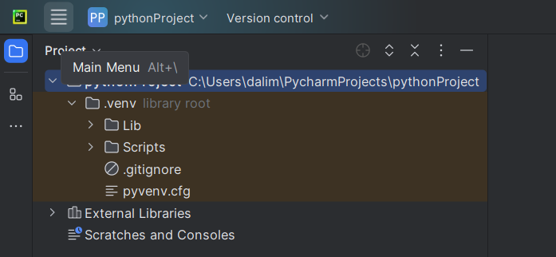
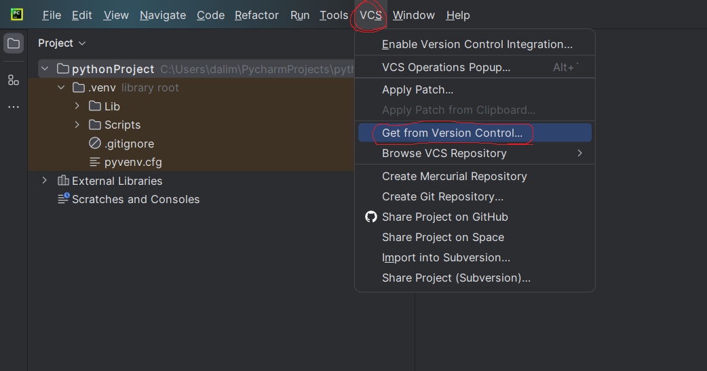
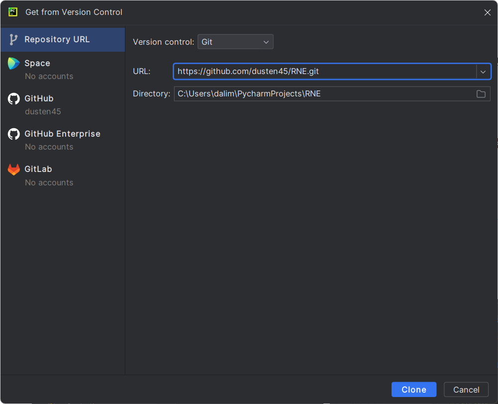
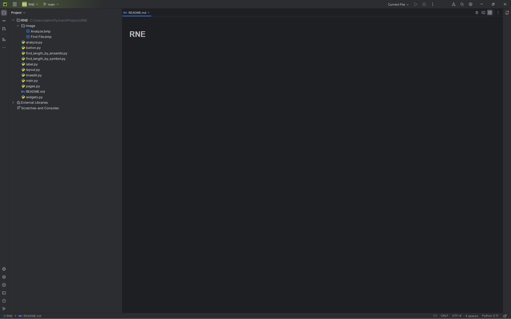
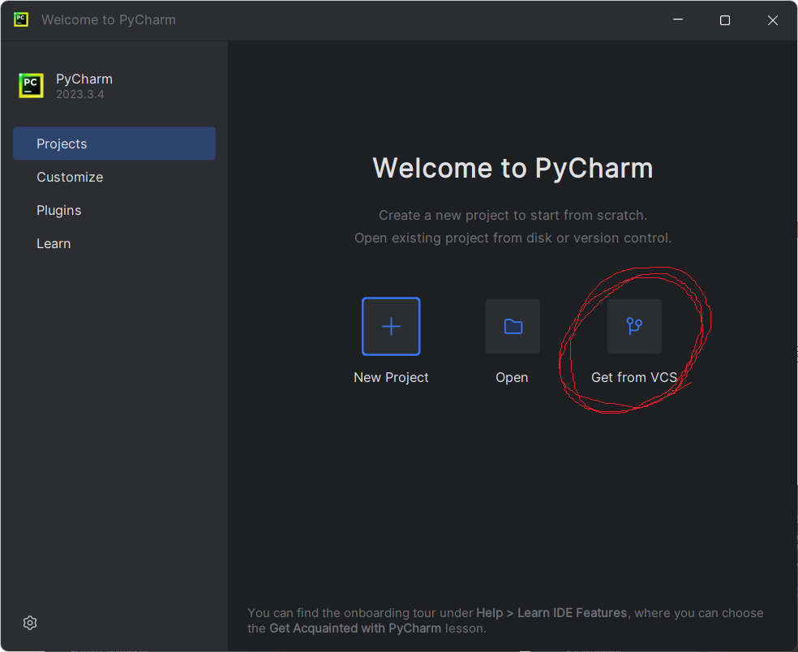
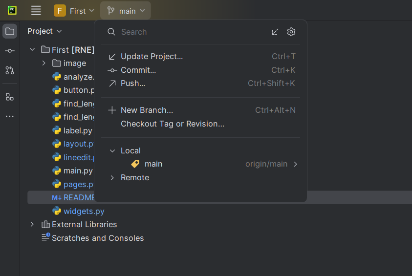

PyCharm과 git 연동하기 1 (초기 세팅하는 법)

1. 실선 3개 버튼을 눌러 기능 목록 열기

2. 기능 목록 중 VCS 클릭
3. Get from Version Control 클릭

2. 자신이 Clone 하고 싶은 Git Url 작성
3. 파일을 컴퓨터의 어디에 저장할지 주소 작성
ex) C:\Users\User\PyCharmProjects\...
4. 오른쪽 아래의 Clone 버튼 클릭

5. Git과 PyCharm 연결 완료!
PyCharm과 git 연동하기 2 (초기 세팅하는 법)

1. Get from VCS 클릭
2. 자신이 Clone 하고 싶은 Git Url 작성
3. 파일을 컴퓨터의 어디에 저장할지 주소 작성
ex) C:\Users\User\PyCharmProjects\...
4. 오른쪽 아래의 Clone 버튼 클릭
5. Git과 PyCharm 연결 완료!
Git 사용 시 필수 명령어 3가지
with. PyCharm
